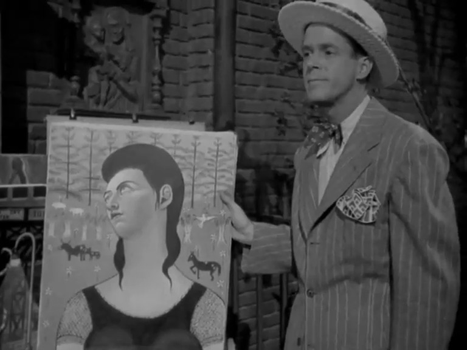

Scarlet Street, frame at 53:17
Fritz Lang · 1945 · Film, black and white (frame)
Free to use
The paintings credited to Edward G. Robinson's character, an amateur painter, were made for the film by John Decker. Twelve of them were sent to the Museum of Modern Art in New York for exhibition in March 1946. Fritz Lang made the film through Diana Productions, a company he formed with the producer Walter Wanger and the actress Joan Bennett; Lang owned 51 per cent and Bennett 25.